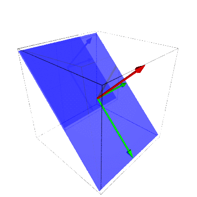
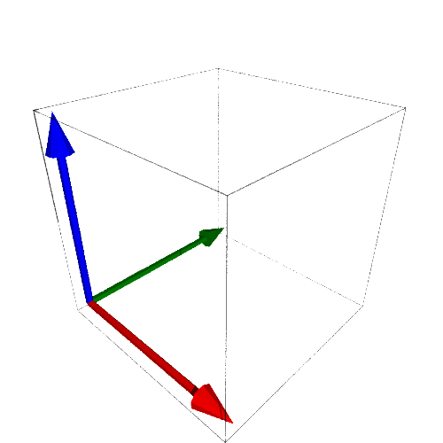
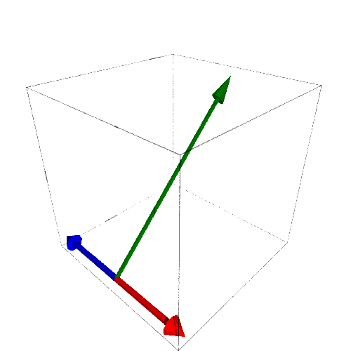

What is true, though perhaps not immediately obvious, is that this doesn't depend on the values of \(A\text{,}\) \(\vec{w}\text{,}\) or \(\vec{v}\text{.}\)
Theorem3.3.1.
If \(A\) is an \(n\times m\) matrix, \(\vec{v},\vec{w}\in\mathbb{R}^m\text{,}\) and \(a,b\in\mathbb{R}\text{,}\) then
We can see these visually in Figure 3.3.3 where you can see the plain of the row space transition to the plain of the column space while the vector of the null space transitions to zero.

Figure3.3.3. Row and Null Spaces Transitioning to Column Space and Zero
If we multiply each of the standard basis elements by the matrix \(A\) we get
which are the columns of the matrix. The domain of the transformation defined by \(A\) is therefore \(\mathbb{R}^3\text{,}\) Figure 3.3.4. Meanwhile, the image (or range) of the transformation is the column space of \(A\) which is a copy of \(\mathbb{R}^2\text{,}\) Figure 3.3.5. So the basis for \(\mathbb{R}^3\) has been turned into a basis for a plain that is a copy of \(\mathbb{R}^2\text{.}\) 1 This is the perspective that we will spend time on in Section 3.4.


Figure3.3.4. Standard Basis Before TransformationFigure3.3.5. Basis After Transformation by \(A\)
We can also define a linear transformation \(T_A\) algebraically by
\begin{equation*}
\left(
\begin{array}{c}
x\\ y \\ z
\end{array}
\right)
\stackrel{T_A}{\leadsto}
\left(
\begin{array}{c}
x-z\\ y \\ y
\end{array}
\right)
\end{equation*}
which has the same effect as multiplying the vector \(\left\lt x,y,z\right\gt\) by \(A\text{.}\)
We have three ways to think of each transformation. Each transformation is a manipulation of a physical space, a change from one basis to another, or a series of algebraic instructions. All of these are reasonable ways to view a transformation and which perspective we use depends on what we wish to accomplish.